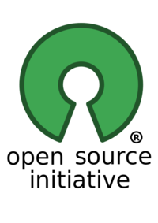
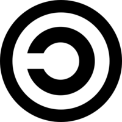

Free Software

IES Virgen del Carmen (Jaén)
“Free software” means software that respects users’ freedom and community. Roughly, it means that the users have the freedom to run, copy, distribute, study, change and improve the software. Thus, “free software” is a matter of liberty, not price. To understand the concept, you should think of “free” as in “free speech,” not as in “free beer”. We sometimes call it “libre software,” borrowing the French or Spanish word for “free” as in freedom, to show we do not mean the software is gratis.
A program is free software if the program’s users have the four essential freedoms:
Freedoms 1 and 3 require Access to the source code.

A program is free software if it gives users adequately all of these freedoms. Otherwise, it is nonfree.
The reason they are numbered 0, 1, 2 and 3 is historical. Around 1990 there were three freedoms, numbered 1, 2 and 3. Then we realized that the freedom to run the program needed to be mentioned explicitly. It was clearly more basic than the other three, so it properly should precede them. Rather than renumber the others, we made it freedom 0.
The freedom to run the program as you wish. In this freedom, it is the user’s purpose that matters, not the developer’s purpose.
The freedom to run the program as you wish means that you are not forbidden or stopped from making it run.
The freedom to study the source code and make changes. For freedoms 1 and 3 to be meaningful, you must have access to the source code of the program. Therefore, accessibility of source code is a necessary condition for free software. Obfuscated “source code” is not real source code and does not count as source code.
Freedom 1 includes the freedom to use your changed version in place of the original.
The freedom to redistribute if you wish means you are free to redistribute copies, either with or without modifications, either gratis or charging a fee for distribution, to anyone anywhere. Being free to do these things means (among other things) that you do not have to ask or pay for permission to do so.
You should also have the freedom to make modifications and use them privately in your own work or play, without even mentioning that they exist. If you do publish your changes, you should not be required to notify anyone in particular, or in any particular way.
A free program must be available for commercial use, commercial development, and commercial distribution.
Commercial development of free software is no longer unusual; such free commercial software is very important. You may have paid money to get copies of free software, or you may have obtained copies at no charge. But regardless of how you got your copies, you always have the freedom to copy and change the software, even to sell copies.
Proprietary software also known as “Closed Source Software” is non-free computer software for which the software’s publisher or another person retains intellectual property rights-usually copyright of the source code, but sometimes patent rights. It is not to be confused with Commercial software or Business software.
Open source software (OSS) is a type of computer software in which source code is released under a license in which the copyright holder grants users the rights to study, change, and distribute the software to anyone and for any purpose.

Another group uses the term “open source” to mean something close (but not identical) to “free software”. We prefer the term “free software” because, once you have heard that it refers to freedom rather than price, it calls to mind freedom. The word “open” never refers to freedom.
Copyleft, distinguished from copyright, is the practice of offering people the right to freely distribute copies and modified versions of a work with the stipulation that the same rights be preserved in derivative works created later.
Copyleft 
Slides generated from Slide Show (S9):